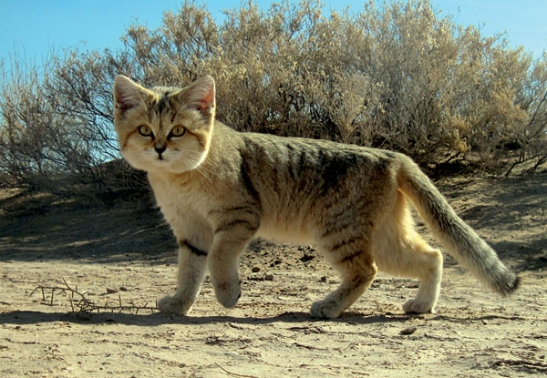

Hi, my name is Austra Zvejsalniece and welcome to my webpage! Here I want to talk about myself and a bunch of things that interest me!
About me
Hi, im a tech-passionate IT student majoring in ICT infrastructure and cloud services at Haaga Helia University of applied sciences in Helsinki. I have been interested in tech since an early age, I have been using Linux for 6 years now and have been enjoying the customizability and freedom it brings Quite passionate about OSINT, cybersecurity and digital ethics as I find our new technical society excitingly dangerous!